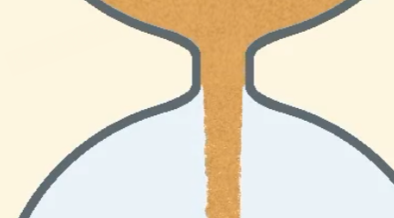

3.11 出口材质接缝复审
2026-10-23 · NS03 · P1 · 未解决。用户反馈与本版原生PC画面均能辨认出口固定高度的材质分界。原“衔接通过”结论漏检本项，当前决定已重新打开；原发布记录、通过记录及证据保留。

用户原图，未修改。
已发布3.11原生PC画面。先按正常尺寸看整体。
同图出口裁剪，未缩放。颈内较密实，出口下方颗粒、明暗及覆盖突然变化。
代码确认两套规则在此切换：颈部使用连续平流纹理和统一明暗映射；沙柱使用每粒随机取样，色差额外放大1.6倍，并在出口下方立即启用微粒孔隙。2像素重叠只补空隙。共用贴图与配色不能保证最终材质一致。独立只读源码复核得到相同结论，尚未通过消融量化各因素贡献。
本轮未修改应用，未重新采集动态过程，不能判断速度是否也有断档。配色、粗细档位、开局、末段及暂停恢复仍待针对本项检查。
建议仅处理出口附近：先匹配取色、明暗和颗粒尺度，再逐渐进入自由沙粒表现。过渡长度以约0.5～1个净口径为试验起点，需实图验证。保持现有颈宽、粒子轨迹与3.3飞溅。修后按NS03复查正常尺寸及动态，并检查上沙接颈部、沙柱边缘和首次落地。
问题、证据摘要与未检查项 · 保留的原决定 · 原3.11记录 · 当前决定